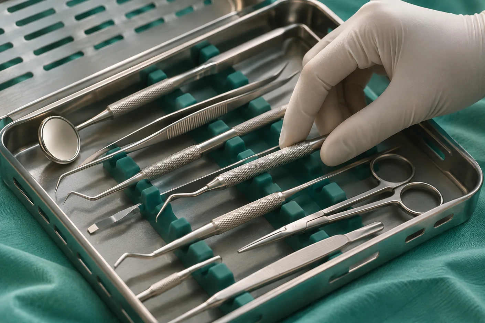
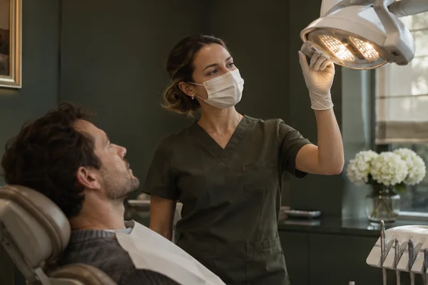
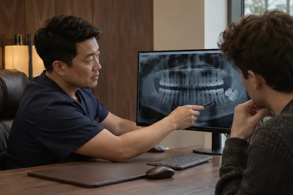
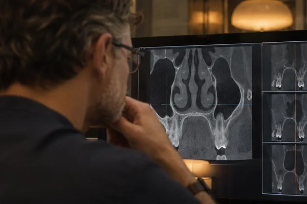
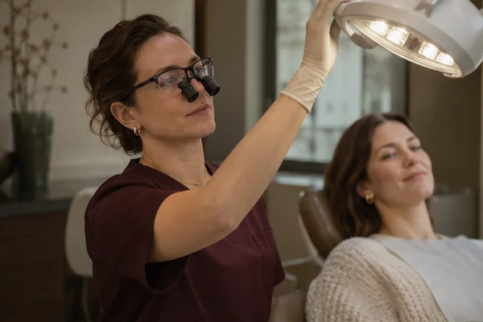

Оценка показаний
Проверим показания, снимки и особенности здоровья.
VARENNE · ХИРУРГИЯ
Продуманное вмешательство.
Удаление зубов, подготовка к имплантации и операции на мягких тканях. Объём вмешательства определяется после диагностики.
Обсудить с врачом
СОСТАВ НАПРАВЛЕНИЯ

Удаление по показаниям после оценки возможности сохранения.
от 18 000 ₽
Планирование с учётом положения зуба и соседних анатомических структур.
от 35 000 ₽
Подготовка к имплантации в боковом отделе верхней челюсти по показаниям.
от 80 000 ₽
Коррекция тканей вокруг зубов и имплантатов в составе комплексного лечения.
от 45 000 ₽Цены — примеры для демонстрационного сайта, не предложение медицинских услуг. Итоговый состав и стоимость реального лечения определяет клиника после диагностики.
ПРОЦЕСС
Проверим показания, снимки и особенности здоровья.
Выполним согласованное вмешательство с выбранным методом обезболивания.
Обсудим уход после операции и назначим контрольный осмотр.

ЗНАКОМСТВО СО СПЕЦИАЛИСТОМ
Хирург · имплантолог
Хирургический этап согласуется с будущей конструкцией. До начала лечения обсуждаются обследование, объём вмешательства, восстановительный период и контрольные встречи.
Профиль врачаИллюстративный профиль. Имя и изображение вымышлены.
ДО ПЕРВОГО ВИЗИТА
С консультации и диагностики по показаниям. Врач объясняет клиническую ситуацию, варианты и возможные ограничения.
Да. На консультации можно обсудить имеющийся план и исследования. Принесите доступные снимки и медицинские документы.
Это зависит от диагноза и объёма работы. Врач обозначит предполагаемые сроки после обследования и согласует последовательность визитов.
Пример визита
Выберите направление, врача и удобное для вас время.